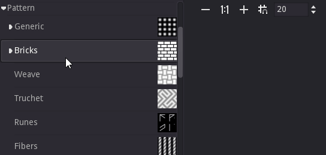
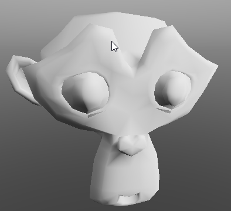

First steps with the user interface¶
Creating a material¶
When opening Material Maker, a new empty Material project is created automatically and shown in the center panel. An empty project simply consists of a Material node where textures for all elements of the material should be connected.
To create a new node, simply choose one (for example “Pattern/Bricks”) from the library (the top left panel) and drag it into the graph editor. Depending on the selected library item, a preview or a simple description will be displayed while dragging.
An alternate method to create a node is to show the library menu using the space bar in the Project panel, and select a node from the list. The library menu will also be shown when connecting a node output into an empty space in the graph (in this case, the newly created node will be connected automatically).

Selecting this new node (by clicking on it) shows it in the 2D preview panel.
To connect a node output to an input of another node, simply drag one to the other. For example we can drag the first output of the Bricks node to the albedo input of the Materials node. This will automatically assign the simple Bricks texture to the albedo element of the material, and the 3D preview will immediately be updated.
Nodes can also be disconnected by dragging a connected input away from its node.

Nodes can easily be configured by modifying their parameters, and previews are updated automatically.
Since each input can be connected to a single output, reconnecting an input will automatically remove the previous connection.
Painting a 3D model¶
Painting projects can be created using the File -> New Paint Project menu item. this will show a dialog where the 3D model to be painted and the texture resolution can be selected.
The Project Panel will then show a 3D view of the model where it can be painted and a graph view where brushes can be created and modified.
The following panels will also be shown:
Layers: this panel can be used to create, reorder and delete layers as well as configure them and select the current layer
Brushes: this panel shows all available brushes, and double-clicking on a brush will select it for painting.
Parameters: this panel shows the parameters of the current brush and can be used to modfy them.
When a brush and a layer is selected, a painting tool can be selected in the top left corner of the Project panel, and the model can then be painted using the left mouse button.
Brushes are described as graph where the inputs of the Brush node describe how all channels (Albedo, Metallic, Roughness, Emission and Depth) of the model’s material will be affected when painting.